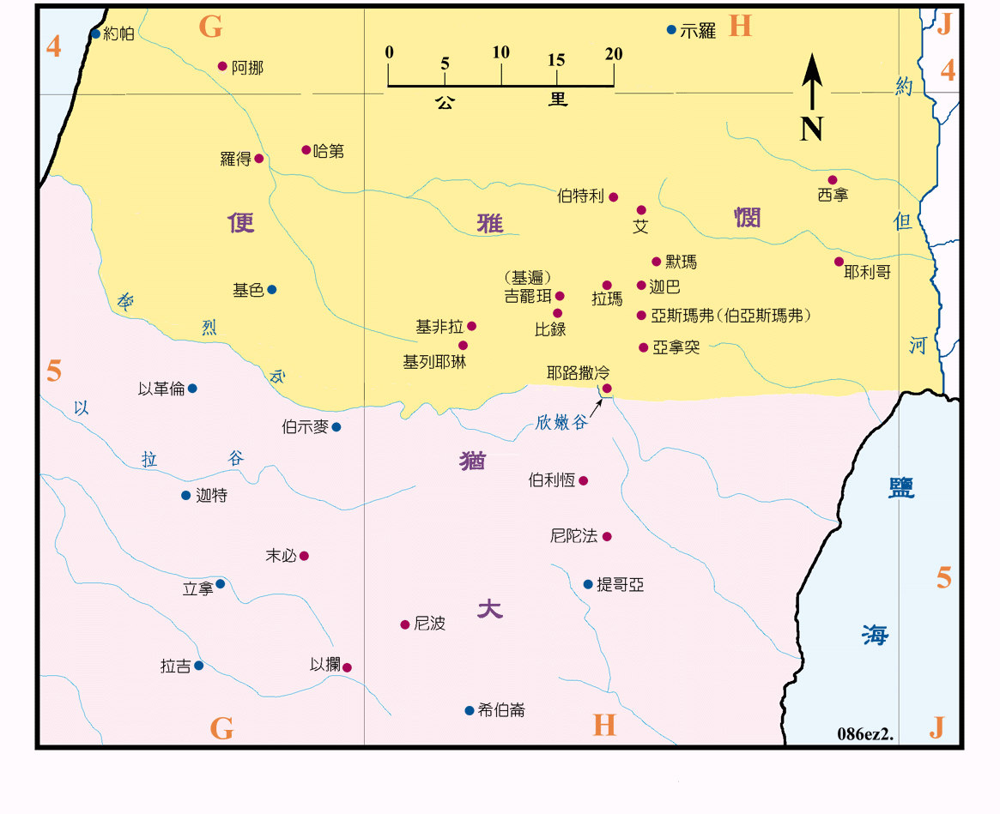

| 圣经 | 说明 |
|---|---|
| 拉2:20-35 | 回归故国之以色列人的祖籍各城。 |
第一批归国的以色列人在 537BC 由设巴萨、所罗巴伯和耶书亚等带领，共有四万二千馀人，各回到原籍自己的城镇居住，这些城都在耶路撒冷的四周，主要是属於便雅悯支派的产业，也包括阿挪和罗得等后来取得的城镇，而属於犹大和利未支派的只有几个。
重建圣殿自 536BC 开始，但在 530BC 圣殿的基础完成后受阻而停顿，直到 520BC 大利乌王降旨才重新复工，到 516BC 圣殿才全部完工。
以斯拉於 458BC (亚达薛西七年) 奉准回国带领另一批犹大人回耶路撒冷，并带回金银和礼物供圣殿使用并修饰圣殿，然后劝民认罪，遵行神的旨意，离绝外邦男子和外邦女子。